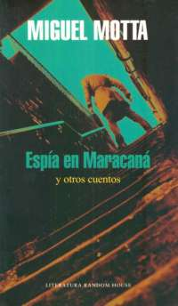
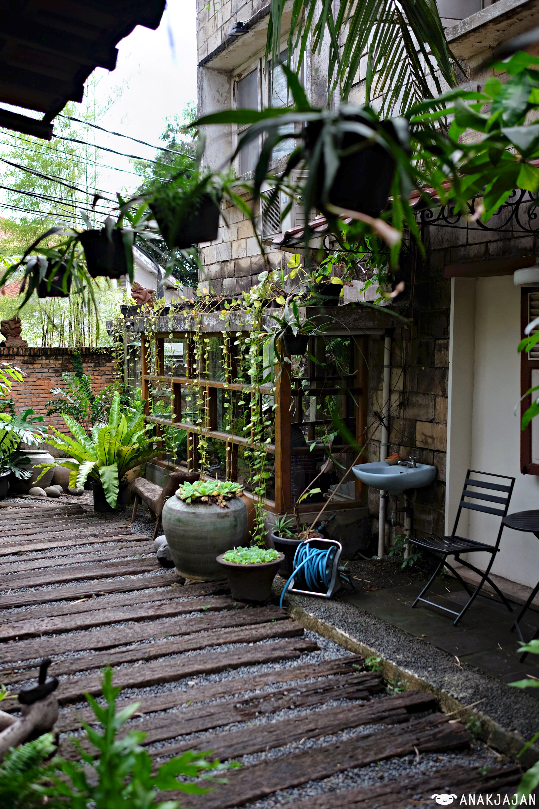
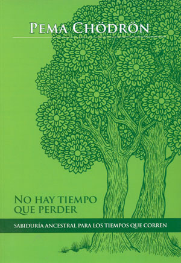

Un atleta que descubre un deporte más fiero y más salvaje, unos guerrilleros que juegan su último partido de fútbol, una mujer que encuentra en la competencia la expiación de su dolor y un periodista uruguayo que huye con las tácticas secretas de la selección
brasileña para ganar el próximo Mundial son algunas de las historias reunidas en este volumen en las que el juego y el impulso de ganar se apoderan de sus protagonistas despertando en ellos fuerzas subterráneas.
Para Miguel Motta el deporte no se limita a los estadios ni se agota en el ejercicio físico, es una manifestación de la máxima sobre la que se ha construido la cultura occidental: más rápido, más alto, más fuerte. Cuentos de amor, desamor, agonía y sed
de triunfo..
Autor
Miguel Motta nació en Salto en 1954. En 1993 aparece su primera novela, “Breviario de un mediocampista”, a la que siguen “Código para una muerte”, “Los días del agua” y “Hasta la línea de llegada”. Ha recibido varios premios, entre
ellos el Premio Nacional de Literatura y el de Ediciones de Banda Oriental.
Ficha
Autor:
MOTTA, MIGUEL
Editorial:
LITERATURA RANDOM HOUSE
Edición:
2018
ISBN:
9789974713529
Páginas:
255
Precio:
$ 420

Remodelamos el patio y tenemos nueva cafetería
Desde hace un mes está funcionando en el remodelado patio de nuestra casa Central nuestra nueva cafetería de la cadena THE LAB COFFEE ROASTERS
La nueva cafetería es la tercera que The Lab Coffee Roasters abre en Montevideo (ya hay una en Ciudad Vieja y otra en Pocitos), y hace aproximadamente un mes que funciona en nuestro hermoso patio.
Hay mesas afuera y también adentro, y como las paredes son de vidrio, se aprecia completamente la vegetación y la luminosidad en caso de un día soleado.
Ofrece también café de Colombia, Etiopía, Burundi, Sumatra y El Salvador, una oferta que se complementa con leche, café frío, café saborizado con caramelo y "afogatto" (con helado), entre otros.
Agradecemos a Espacio Verde, una empresa uruguaya que se animó a sumarse a este proyecto de redefinir nuestro patio.
Hicieron un trabajo impresionante, que tanto nosotros como todos los que nos visitan pueden disfrutar mientras acompañan su lectura y sus compras con un café de The Lab Coffee Roasters.

Más leídos
No hay tiempo que perder
Reynaldo Sietecase
Ficción de autor nacional. Sietecase se define como un cazador de historias, alguien nacido para contar. El periodismo y la literatura son sus oficios terrestres, y en ambos despliega la misma actitud. A la hora de narrar, procura
alcanzar precisión y belleza. Las crónicas de este libro sorprenden y conmueven. Precio: $420

Borges cuenta buenos aires
Borges, Jorge Luis
Cuentos de Jorge Luis Borges, con fotos de Carlos Greco y prólogo de María Kodama. Borges funda míticamente su ciudad, la canta a través de sus poemas, la narra a través de sus textos. Borges, como los griegos, es "Borges de Buenos
Aires". Inseparable, para la eternidad. Precio: $1500
El alma del mundo
Lenoir, Frederic
En “El alma del mundo”, el narrador y crítico literario Felipe Polleri, autor de “El payaso y sus juegos”, “Carnaval”, “Colores” y “Amanecer en Lisboa”, construye un relato de trazo deliberadamente surrealista, en el que cohabitan
la cordura, la locura y la reflexión. Precio: $250